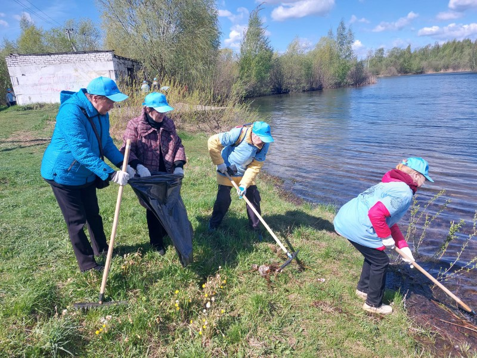

Жители Чернолесья провели масштабный субботник у местного озера

В минувшие выходные поселок Чернолесье объединился ради общего дела — благоустройства территории вокруг местного озера, которое давно стало любимым местом отдыха жителей. В субботнике приняли участие более 50 человек: семьи с детьми, школьники, представители администрации и активные жители.
Работы начались с самого утра. Участники разделились на группы, чтобы охватить как можно большую территорию — одни занимались сбором мусора вдоль береговой линии, другие очищали тропинки и зоны для пикников. В результате всего за несколько часов удалось собрать несколько десятков мешков мусора, включая пластиковые бутылки, упаковки и старые бытовые отходы.
Особое внимание уделили прибрежной зоне: здесь убрали заросли сухой травы, привели в порядок подходы к воде и расчистили места для отдыха. По словам организаторов, после уборки территория заметно преобразилась и стала значительно чище и безопаснее.
«Очень приятно видеть, как люди откликаются и приходят помогать. Многие пришли семьями, с детьми — это важно, потому что формирует ответственное отношение к природе с раннего возраста», — отметил один из инициаторов акции.
После завершения работ для участников устроили небольшой отдых: на берегу организовали чаепитие, а самые юные помощники получили сладкие угощения. Атмосфера получилась по-настоящему тёплой и дружеской.
56 просмотра